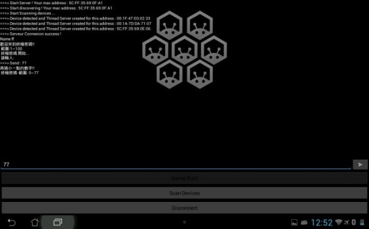
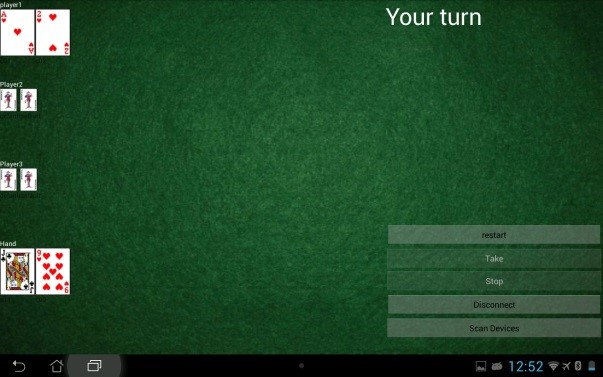

作品
一、 專題 網際網路蓬勃發展，基地台普遍設置，使得藍芽連線逐漸邊緣化，原因在與wifi比較下，具傳輸數度較慢、傳輸距離短、高安全性與省電的特色，藍芽的實用性完全比不上wifi，但若能將此缺點化為優點，我認為藍芽仍具有一定的發展性。 我希望藉由藍芽連線距離較短的特性開發一款APP，提供需要多人連線才能進行的小遊戲，藉此，拉近彼此之間的距離。
我們挑選了逢年過節家人愛玩的撲克牌，不單將遊戲規則導入 ，更透過一些特殊的手勢增加趣味性，讓玩家更有臨場感。工作分成4份：藍芽連線與規則對接的介面、動畫呈現與手勢、規則撰寫以及相關文件的撰寫，分別由4位同學負責，我是負責藍芽連線的部分。
 二、 國科會計畫 進入實驗室後，我幫指導老師寫國科會的計畫，負責網頁架設，建立design pattern與需求分析的資料庫，我使用物件的概念來寫PHP語法，這種寫法相較於一般的寫法更有組織與架構性，在未來的維護上提供不少便利性，唯一的缺點是不適合用來寫大型的網頁。